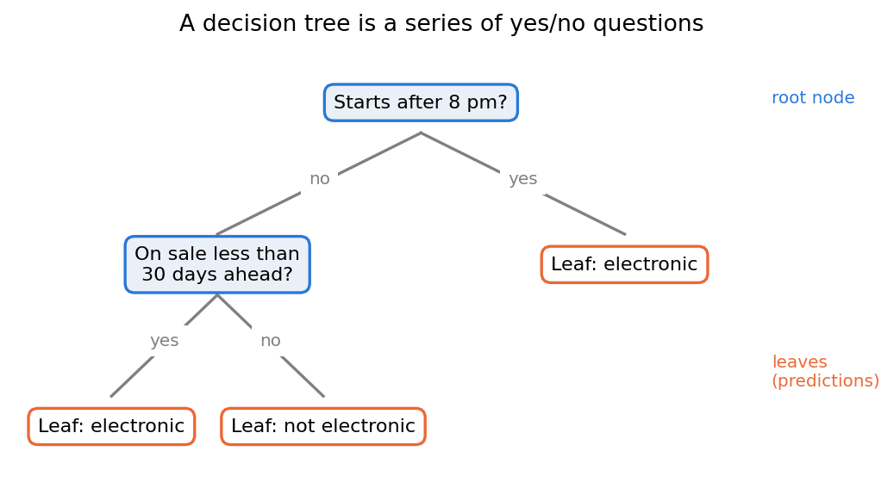
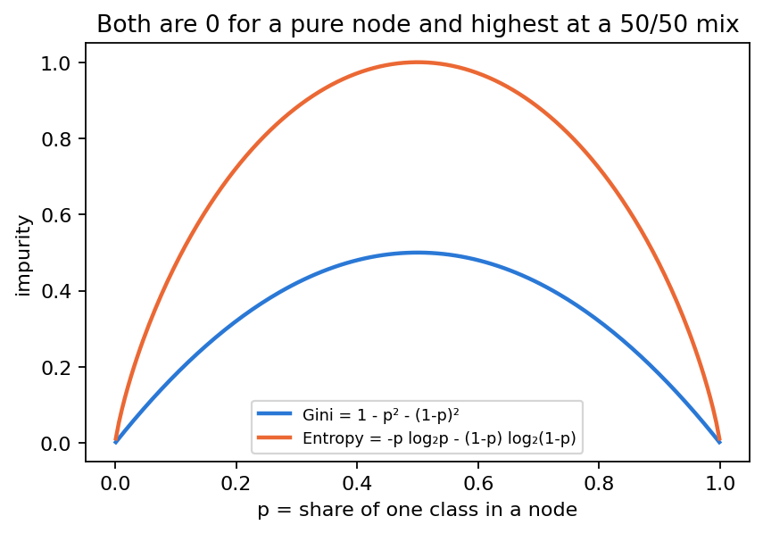
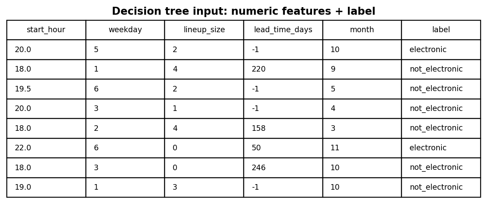
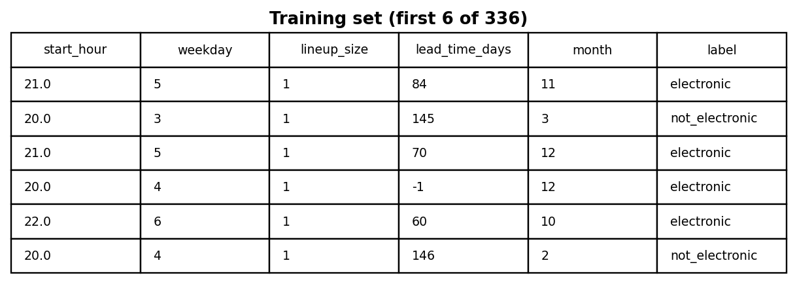
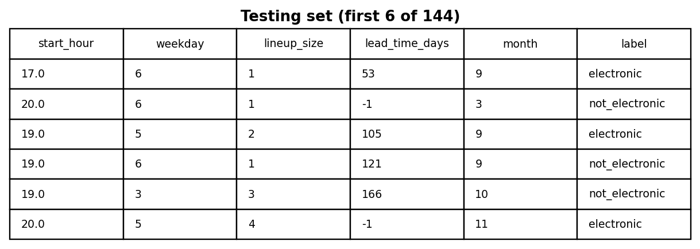
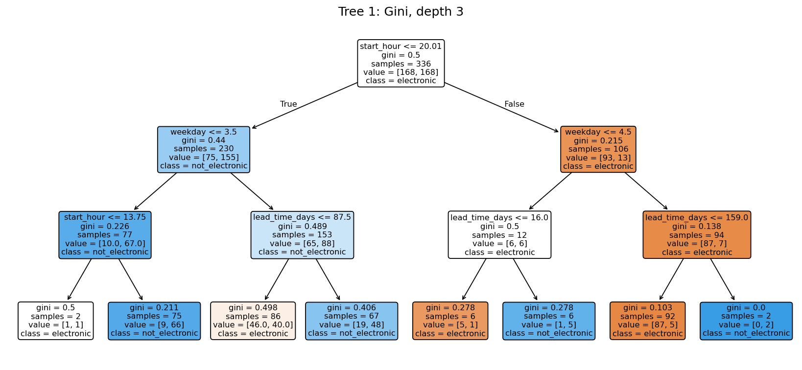
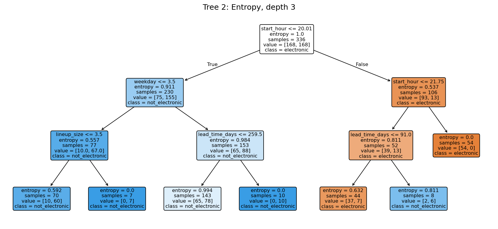
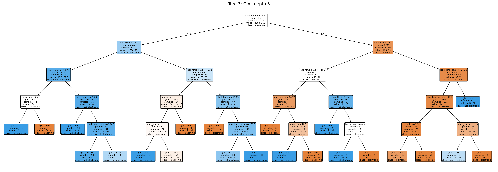
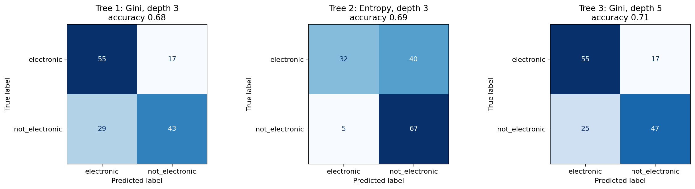
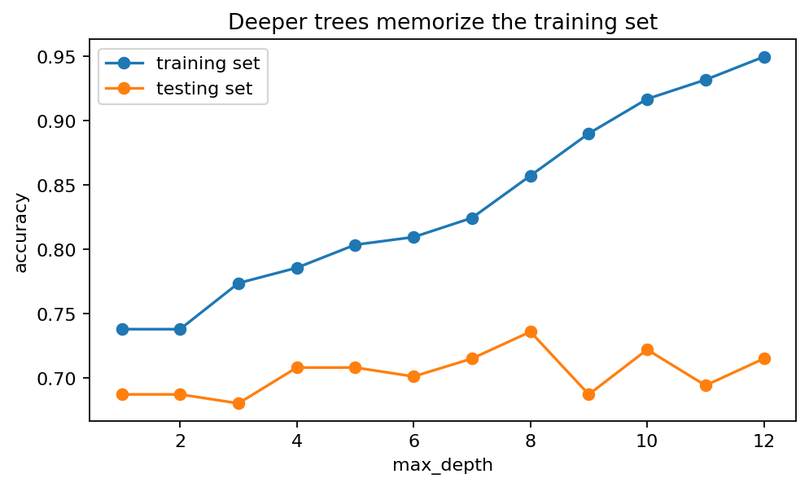

Decision Trees
Which simple rules about an event’s format separate electronic nights from everything else?
Overview
A decision tree is a supervised model that predicts by asking a series of yes/no questions about the features (Figure 1). The first question is the root node, each answer leads to another question, and the final leaves give the prediction: the most common class among the training rows that end there. Trees are used for classification and regression, for example in credit approval, medical triage or customer churn. Their main strength is that the rules can be read and explained.

To grow a tree, the algorithm tries every possible split and keeps the one that makes the child nodes the most pure, meaning mostly one class. Purity is measured with Gini, 1 − Σ pi2, or entropy, −Σ pi log2 pi, where pi is the share of class i in the node. Both are 0 for a pure node and highest for a 50/50 mix (Figure 2). Information gain is the parent’s entropy minus the weighted average entropy of its children: the bigger the gain, the better the split.

Example: the root split of Tree 1, “start_hour ≤ 20.01” (starts by 8 pm or not), on the 336 training events:
| Node | Electronic | Not electronic | Gini | Entropy |
|---|---|---|---|---|
| Parent (all) | 168 | 168 | 1 − 0.5² − 0.5² = 0.500 | 1.000 |
| Starts by 8 pm (230) | 75 | 155 | 1 − (75/230)² − (155/230)² = 0.440 | 0.911 |
| Starts after 8 pm (106) | 93 | 13 | 1 − (93/106)² − (13/106)² = 0.215 | 0.537 |
Weighted Gini of the children = (230/336)(0.440) + (106/336)(0.215) = 0.369, a drop of 0.131 from 0.500. Weighted entropy = (230/336)(0.911) + (106/336)(0.537) = 0.793, so the information gain = 1.000 − 0.793 = 0.207. No other single question gave a bigger improvement, which is why start time became the root.
Why there are infinitely many trees. A numeric feature can be cut at any value (8 pm, 8:01 pm, 8:02 pm, …), any feature can be asked at any level, and a tree can be grown to any depth. Changing the impurity measure, the depth, the minimum leaf size or the training sample changes the tree. So there are endlessly many possible trees, and the algorithm only finds a good one by choosing the best split one step at a time.
Data Prep
Supervised methods need labeled data, and only labeled rows can be
used. This tab uses the same labeled data as the
Naive Bayes tab: 480 events (240 electronic, 240
not, collected 1 November 2026), labeled electronic or
not_electronic, with five format features and no genre or venue.
Scikit-learn trees need numbers, and these features already are numbers, so they
are used directly: the start hour (20.5 = 8:30 pm), the weekday (0 = Sunday,
6 = Saturday), the number of artists, the days between on-sale and the event
(−1 = unknown) and the month (Figure 3).

The data was split into a training set (70%, 336 events) to build
the trees and a testing set (30%, 144 events) to measure them,
using train_test_split with the same random seed as Naive Bayes, so
both models are tested on exactly the same events. The sets are
disjoint: a tree tested on events it was trained on would be
rewarded for memorizing, not predicting.


- Labeled data: exports/module3/events_labeled.csv
- Training set: exports/module3/dt_train.csv · Testing set: exports/module3/dt_test.csv
Code
- decision_trees.py — the split, the three trees, confusion matrices, the depth loop and the Gini/entropy example
- labeled_data.py — builds the labeled data
X_train, X_test, y_train, y_test = train_test_split(X, y, test_size=0.3,
random_state=42, stratify=y)
tree = DecisionTreeClassifier(criterion="gini", max_depth=3, random_state=42)
tree.fit(X_train, y_train)
pred = tree.predict(X_test)
accuracy_score(y_test, pred)
plot_tree(tree, feature_names=FEATURES, class_names=list(tree.classes_), filled=True)Results
Three different trees were built on the same training set:




| Tree | Accuracy | Electronic found | Not electronic found |
|---|---|---|---|
| Tree 1: Gini, depth 3 | 0.68 | 55 of 72 | 43 of 72 |
| Tree 2: Entropy, depth 3 | 0.69 | 32 of 72 | 67 of 72 |
| Tree 3: Gini, depth 5 | 0.71 | 55 of 72 | 47 of 72 |
All three trees start with the same question, whether the event starts after 8 pm, and score between 68% and 71% (50% would be guessing). They make different mistakes, though. Tree 2 rarely calls an event electronic by mistake (5 times), but it misses more than half of the electronic events, while Trees 1 and 3 catch 55 of the 72. The clearest rule is in Tree 1: an event after 8 pm on a Friday or Saturday that goes on sale less than about five months ahead (or with an unknown on-sale date) was electronic in 87 of the 92 training events that matched it.

Making the tree deeper does not help much. Training accuracy climbs from 0.74 to 0.95, but test accuracy stays between 0.68 and 0.74: the extra levels memorize the training events (overfitting) instead of learning rules that carry over to new ones.
Conclusions
Start time is the single most useful thing to know about an event: an electronic night in Colorado typically starts after 8 pm on a Friday or Saturday. With that rule and how far ahead tickets go on sale, a small tree is right about 7 times out of 10 without any genre label. The trees score slightly below Naive Bayes (0.68–0.71 against 0.75), but they give rules that can be read directly. Both models agree that the format of an event says a lot about its genre, and both struggle with the big early concerts by electronic artists, which look like any other concert.